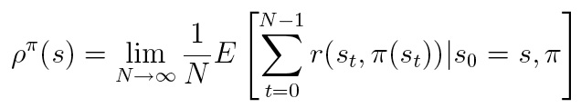
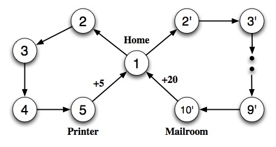

(10%) Suppose you have have a STRIPS representation for actions A1
and
A2, and you want to define the STRIPS representation for the composite
action A1;A2, which means that you do A1 then do A2.
- What is the add list for this composite action?
- What is the delete list?
- What are the preconditions for this composite action?
- Give a possible STRIPS representation of the actions
Move(here,there) and Pickup(object) and for the
composite action Move(here,there);Pickup(object).
(20%)
The towers of Hanoi problem is to move a set of n disks
of different sizes from one peg to another, using a third peg for
temporary storage. Disks are moved one at a time, and a larger disk
cannot rest on a smaller one. (You might be familiar with a recursive
algorithm for solving this problem.) Formulate this problem as a
STRIPS-style planning problem. You will need to specify the initial
state, the goal state, and the set of STRIPS-style operators. Feel free
to use variables in operator description if needed.
(20%) Let us consider a version of the milk/banana/drill shopping problem
in which money is included, at least in a simple way.
- Let CC denote a credit card that the agent can use to buy
any object. Modify the description of Buy so that the agent
has to have its credit card in order to buy anything.
- Write a Pickup operator that enables the agent to
Have an object if it is portable and at the same location as
the agent.
- Assume that the credit card is at home, but Have(CC) is
initially false. Construct a partially ordered plan that achieves the
goal, showing both ordering constraints and causal links.
- Explain in detail what happens during the planning process when
the agent explores a partial plan in which it leaves home without the
card.
(12%) We have only considered planners that have goals of
achievement: Take steps to ensure that a proposition is true at some
time or in some situation. In this exercise, we consider goals of
maintenance and prevention. Maintenance goals involve
propositions that must remain true over a given interval of time.
Prevention goals involve propositions that must never become true
over a given interval of time. Discuss how maintenance and prevention
goals can be handled by least commitment planning (e.g. the POP
algorithm).
(14%) Sometimes MDPs are formulated with a reward function R(s,a) that
depends on the action taken or a reward function R(s,a,s') that also
depends on the outcome state.
- Write the Bellman equations for these formulations.
- Show how an MDP with reward function R(s,a,s') can be transformed
into a different MDP with reward function R(s,a), such that the optimal
policies in the new MDP correspond exactly to optimal policies in the
original MDP.
- Now do the same to convert MDPs with R(s,a) into MDPs with R(s).
(24%)
The goal of this exercise is to give you an understanding of the
possible disadvantages of using discounted rewards and to
introduce the average reward criterion.
Discounted optimization is motivated by domains where reward can be
interpreted as money that can earn interest, or where there is a fixed
probability that a run will be terminated
at any given time. However, many problems do not have either of these
properties.
Discounting in such domains tends to sacrifice long-term rewards in
favor of short-term rewards.
Moreover, the discounted optimal policy may depend on the choice of the
the discount factor.
It is true that for any finite MDP (an MDP with finite state and action
spaces) there is some sufficiently large λ
for which the discounted and undiscounted measures agree. However,
proper choice of such λ requires detailed knowledge of the problem.
Even with such knowledge, a parameter such as λ
that needs to be tailored to suit individual problems is clearly undesirable.
Therefore, the agent may prefer to compare policies on the basis of their
average expected reward instead of their expected discounted reward. The aim
of the average reward MDP is to compute policies that yield the highest
expected payoff per time step. The average reward or gain
associated with a policy π at state s, is defined as follows
(if the average reward exists):

Consider the 14 state MDP whose state-transition diagram is given below.
All transitions are deterministic. The agent receives a reward of +5
on moving from the Printer to Home and a reward of +20 on moving from the
Mailroom to Home, all other rewards are zero.

- How many distinct deterministic policies are there for this MDP?
What are they?
- For each policy, give an expression for the value of state 1
(assuming discounting)?
- For what values of λ in [0,1) does an optimal policy take
the agent to the Printer?
- For what values of λ in [0,1) does an optimal policy take
the agent to the Mailroom?
- A policy π is called "Blackwell optimal" for a discounted MDP
if there is a λ* in [0,1) such that π is optimal for
all λ in [λ*,1). Does this problem have any
Blackwell optimal policies? Explain your answer.
- For each policy, calculate the average reward of state 1.
Which policy should the agent follow if it seeks to optimize the average
reward?
- For what range of values of the discount factor λ
will the agent select a policy that maximizes the average reward?
© 2007 Shlomo Zilberstein.